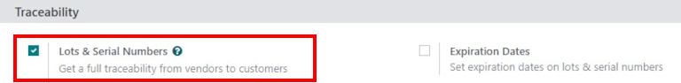

Estrategias de remoción (PEPS, UEPS, LIFO)¶
Para las empresas con almacenes, las estrategias de remoción determinan qué productos se toman del almacén y en qué momento. Por lo general, se deben definir estas estrategias para operaciones específicas de recolección, son útiles para las empresas ya que les ayudan a seleccionar los mejores productos, optimizar la distancia que los trabajadores deben recorrer al recolectar artículos para las ordenes y con fines de control de calidad, como mover productos que tienen fechas de vencimiento.
Normalmente, las estrategias de remoción se definen en las operaciones de recolección para seleccionar los mejores productos y así optimizar la distancia para el trabajador, con fines de control de calidad, o para mover primero los productos con la fecha de caducidad más próxima.
Cuando es necesario mover algún producto, Odoo encuentra los productos disponibles que se pueden asignar al traslado. La forma en la que Odoo hace esto depende de la estrategia de remoción que se definió en la categoría de producto o en el tablero de ubicación.
Para cambiar la estrategia de remoción, vaya a la aplicación o . Haga clic en una ubicación o categoría de producto y luego haga clic en editar. Cambie la categoría de producto a Forzar estrategia de remoción o la ubicación de estrategia de remoción, para esto debe hacer clic en el menú desplegable y seleccionar la estrategia necesaria. Por último, haga clic en Guardar.

¿Qué sucede dentro del almacén?¶
La mayoría de los almacenes comparten las mismas áreas importantes, cuentan con muelles de recepción y áreas de clasificación, ubicaciones de almacenamiento, áreas de recolección y embalaje así como muelles de envío o de carga. Si bien todos los productos que entran o salen del almacén pueden pasar por todos estos lugares en algún momento, las estrategias de remoción pueden modificar qué productos se toman, de dónde y cuándo.
En el siguiente ejemplo, los camiones de los proveedores descargan palés de mercancías en los muelles de recepción. Luego, los operadores escanean los productos en el área correspondiente, con su fecha de recepción y de vencimiento. Después de esto, se encargan de almacenar los productos en sus respectivas ubicaciones.
Nota
No todos los productos cuentan con fechas de vencimiento, pero en el caso particular para este ejemplo sí las hay.

Con Odoo tiene la posibilidad de recibir productos. Vaya a la aplicación y, en la vista kanban, haga clic en el botón Recibos o # POR PROCESAR . En el tablero de recibos debe buscar y hacer clic en una recepción individual, esto abrirá el formulario de admisión al almacén. Haga clic en Editar y luego introduzca la cantidad recibida en la columna Hecho. Para finalizar, debe validar esto para recibir los productos y registrarlos en su base de datos de Odoo.
Truco
Con la aplicación Código de barras de Odoo también puede recibir productos. Vaya a la aplicación, escanee los productos, actualice la cantidad y, por último, haga clic en Validar. Después de recibir los productos con Odoo, puede trasladarlos a sus respectivos lugares de almacenamiento.
Con el mismo ejemplo como referencia, ahora imagine que se hacen varias órdenes de ventas para los productos que acaban de recibir y que tienen fechas de vencimiento. En este ejemplo, los productos no se recibieron el mismo día y no tienen la misma fecha de caducidad. En esta situación, por sentido común, lo mejor sería enviar productos con la fecha de vencimiento más cercana, en lugar de enviar aquellos que recibió primero o al último. Mediante la estrategia de remoción que se configuró para esos productos (en este ejemplo, ref:PEPS <routes/FEFO>), Odoo genera un traslado para los productos con la fecha de vencimiento más cercana al área de recolección, luego el área de empaquetado, y, para terminar, a los muelles de envío para que se pueda entregar al cliente.
Nota
Para recolectar estos productos y entregarlos, puede encontrar el número de lote o serie del producto en el formulario de traslado. Para obtener más información sobre recolecciones y envíos, consulte la documentación sobre la entrega en dos pasos o la entrega en tres pasos.
Funcionamiento de cada estrategia de remoción¶
Las estrategias de remoción determinan qué productos se toman del almacén cuando se confirman las órdenes.
Primeras entradas, primeras salidas (PEPS)¶
Al utilizar la estrategia primeras entradas, primeras salidas (PEPS o FIFO, por sus siglas en inglés), la demanda de algunos productos activa una regla de remoción, esta solicita un traslado del número de lote o de serie que ingresó primero a sus existencias (es decir, que ha estado allí durante más tiempo).
Por ejemplo, imagine que hay tres lotes de clavos en el almacén con los números de lote 00001, 00002 y 00003. Cada uno tiene cinco cajas de clavos.
El lote 00001 entró a las existencias el 23 de mayo, el lote 00002 entró el 25 de mayo y el lote 00003 entró el 1 de junio. Un cliente ordena seis cajas el 11 de junio.
Con la estrategia de remoción PEPS la solicitud de traslado tomará las cinco cajas del lote 00001 primero y luego las del lote 00002, ya que el lote 00001 ingresó primero a las existencias. La caja del lote 00002 se toma después porque tiene la fecha de recepción más antigua después del lote 00001.

Últimas entradas, primeras salidas (UEPS)¶
De forma similar al método PEPS, la estrategia de remoción Últimas entradas, primeras salidas (UEPS) mueve productos según la fecha en que ingresaron a las existencias de un almacén. Sin embargo, en lugar de tomar las existencias disponibles que tienen mayor antigüedad, se toman las más recientes.
Cada que se realiza una orden de productos con el método UEPS, se crea un traslado para el número de lote o serie que entró más recientemente a las existencias (el último número de lote o serie que ingresó al inventario del almacén).
Advertencia
La estrategia de remoción UEPS está prohibida en muchos países, ya que podría causar que los clientes reciban productos antiguos, caducados u obsoletos.
Por ejemplo, imagine que hay tres lotes de cajas de tornillos en el almacén con los números de lote 10001, 10002 y 10003. Cada uno tiene diez cajas.
El lote 10001 entró a las existencias el 1 de junio, el lote 10002 entró el 3 de junio y el lote 10003 entró el 6 de junio. Un cliente ordena siete cajas el 8 de junio.
Con la estrategia de remoción UEPS se solicitó un traslado de siete cajas de tornillos del lote 10003. Ese lote es el último que ingresó a las existencias.

Primero en expirar, primero en salir (FEFO)¶
Mientras que los métodos PEPS y UEPS toman productos para su remoción según la fecha de entrada al almacén, el método Primero en expirar, primero en salir (FEFO) toma productos para su remoción según sus fechas de vencimiento asignadas.
Al utilizar la estrategia de remoción FEFO, cada orden de venta que incluye productos con esta estrategia asignada garantiza que se soliciten traslados para productos con la fecha de vencimiento más cercana a la fecha de la orden.
Por ejemplo, imagine que hay tres lotes de cajas de seis huevos, además tienen los números de lote 20001, 20002 y 20003. Cada uno tiene cinco cajas.
El lote 20001 ingresó a las existencias el 1 de julio y caduca el 15 de julio, el lote 20002 ingresó el 2 de julio y caduca el 14 de julio, y el lote 20003 ingresó el 3 de julio y caduca el 21 de julio. Un cliente realiza una orden de seis cajas el 5 de julio.
Se solicita un traslado para las cinco cajas del lote 20002 y una del lote 20001 con el método FEFO. Todas las cajas del lote 20002 se trasladan porque tienen la fecha de caducidad más próxima. Este traslado también solicita una caja del lote 20001 porque tiene la fecha de caducidad más cercana después del lote 20002.

Uso de las estrategias de remoción¶
Para diferenciar las unidades de algunos productos de otras, debe rastrearlas. Puede hacerlo por número de lote o de serie. Vaya a y active las funciones ubicación de almacenamiento, rutas multietapa y números de lote y de serie. Haga clic en el botón correspondiente para guardar los cambios.

Nota
Para usar la estrategia de remoción FEFO también debe habilitar los ajustes correspondientes a las fechas de caducidad. Para hacerlo, vaya a la aplicación , diríjase a la sección Trazabilidad y haga clic en la casilla junto a Fechas de vencimiento. Recuerde hacer clic en el botón Guardar.
También puede definir estrategias de remoción específicas en categorías de productos. Para hacer esto, vaya a la aplicación y elija una para definir la estrategia correspondiente. Elija una estrategia de remoción en el campo Forzar estrategia de remoción.
La estrategia primero en expirar, primero en salir (FEFO, por sus siglas en inglés) es distinta a las dos estrategias anteriores. Para FEFO, lo que importa es la fecha de expiración y no la fecha de ingreso a las existencias.
Por ejemplo, imagine que hay tres lotes de cajas con seis huevos (en este caso específico, no olvide usar las unidades de medida). Esos tres lotes tienen los siguientes números: 20001, 20002 y 20003, cada uno con cinco cajas.
20001 ingresó a las existencias el 1 de julio y vence el 15 de julio, 20002 ingresó el 2 de julio y vence el 14 de julio, y 20003 ingresó el 4 de julio y expira el 21 de julio. Un cliente ordena seis cajas el 5 de julio. Si selecciona la estrategia FEFO, se trasladan cinco cajas de 20002 y una de 20001. El traslado de todas las cajas en el lote 20002 se debe a que tiene la fecha de vencimiento más cercana. El traslado también solicita una caja de 20001, pues tiene la fecha de vencimiento más próxima después de 20002.
Básicamente, para cada orden de venta de un producto con la estrategia FEFO, se solicita un traslado del producto que tiene la fecha de expiración más próxima a la fecha de la orden.
Ubicación más cercana¶
La estrategia de ubicación más cercana es muy distinta a las demás estrategias de remoción. No se relaciona con la fecha de ingreso al almacén, sino con la ubicación del producto, pues suele utilizarse para los productos que no se deterioran con el tiempo.
El objetivo es evitar que el trabajador tenga que buscar en lo más profundo del almacén cuando el producto también se ubica en una ubicación cercana. Este método solo está disponible si el ajuste ubicaciones de almacenamiento está activado. De hecho, la ubicación más cercana es la que aparece primero en orden alfabético.
Utilizar estrategias de remoción¶
Para diferenciar algunas unidades de otras, debe rastrearlas. Puede hacerlo por número de lote o de serie. Vaya a y active las funciones ubicación de almacenamiento, rutas multietapa y números de lote y de serie.

Si desea ver todos los productos con lotes o números de serie asignados, vaya a la aplicación . Esto muestra una página con menús desplegables de todos los productos con números de lote o serie asignados, filtrados por producto de forma predeterminada. Para cambiar la categoría por la que se filtran estos productos, haga clic en Producto (en la barra de búsqueda, en la parte superior derecha de la página) para eliminar el filtro predeterminado y seleccione un nuevo filtro si lo desea.

Si desea ver los números de serie seleccionados para una orden de venta, vaya a la aplicación Ventas y seleccione la orden de venta correspondiente. Dentro de la orden de venta, haga clic en el botón inteligente Entrega ubicado en la esquina superior derecha. Vaya a la pestaña Operaciones y haga clic en el icono ⦙≣ (Operaciones detalladas) que aparece en el extremo derecho del producto. Se abrirá la ventana Operaciones detalladas, que muestra los números de lote o serie seleccionados para ese producto específico en la orden de entrega.
PEPS (Primeras entradas, primeras salidas)¶
La estrategia de remoción PEPS implica que los productos que entran primero en el almacén se retiran primero. Las empresas deberían utilizar este método si venden productos con ciclos de demanda cortos, como ropa, para asegurarse de que no se quedan con estilos obsoletos en existencias.
Por ejemplo, imagine que tenemos tres lotes de camisas blancas. Las camisas pertenecen a la categoría Todo/Ropa y se ha establecido PEPS como estrategia de remoción. En el Reporte de valoración de inventario, se enumeran los tres recibos diferentes con sus importes.
El lote 000001 contiene cinco camisas, 000002 contiene tres y 000003 contiene dos.
Si desea ver cómo funciona la estrategia de remoción, vaya a la aplicación y haga clic en crear para crear una orden de ventas. Seleccione un cliente del menú desplegable y haga clic en añadir producto en la pestaña líneas de la orden. Seleccione un producto (para este ejemplo, camisa blanca) en el menú desplegable, o escriba el nombre del producto en el campo. Introduzca una cantidad (para este ejemplo, 6.00) en el campo cantidad, haga clic en guardar y, a continuación, haga clic en confirmar.
Una vez que se confirme la orden de venta, se creará la orden de entrega vinculada a la preparación de pedidos y se reservarán los números de lote más antiguos gracias a la estrategia PEPS. Se seleccionaran las cinco camisas del lote 000001 y una del lote 000002 para enviarlas al cliente.

UEPS (Últimas entradas, primeras salidas)¶
La estrategia de remoción UEPS funciona de forma opuesta a la estrategia PEPS. Con este método, los productos que se reciben al último se retiran primero. Este método se utiliza sobre todo para productos que no tienen una vida útil o que no depender de una fecha de caducidad.
En este ejemplo hay tres lotes de bloques de cemento. Los bloques forman parte de la categoría Todos/Materiales de construcción y su estrategia de remoción es PEPS. En el Reporte de valoración del inventario aparecen las tres distintas recepciones con las cantidades.

El lote 000020 contiene tres bloques de cemento, el lote 000030 cinco y el lote 0000400 cuatro.
Si desea ver cómo funciona la estrategia UEPS primero vaya a la aplicación , y seleccione una categoría de producto (para este ejemplo, la categoría todo/materiales de construcción) a editar. Cuando haga esto podrá ver un formulario de categoría de producto.
Una vez que esté en el formulario de categoría de producto, vaya a la sección logística y fuerce la estrategia de remoción a UEPS.

Si desea ver cómo funciona la estrategia de remoción, vaya a la aplicación y haga clic en crear para crear una orden de venta. A continuación, seleccione un cliente del menú desplegable. Haga clic en agregar producto en la pestaña líneas de la orden, seleccione un producto (para este ejemplo, bloque de cemento) del menú desplegable o escriba el nombre del producto en el campo. Ingrese una cantidad (para este ejemplo, 5.00) en el campo cantidad, haga clic en guardar, y después en confirmar.
Una vez que se confirme la orden de venta, se creará la orden de entrega y se vinculará a la preparación de pedidos. La estrategia UEPS hará que se reserven los números de lote más nuevos. Se seleccionarán los cuatro bloques de cemento del lote 0000400 y uno del lote 000030 para enviarlos al cliente.

FEFO (primero en expirar, primero en salir)¶
La estrategia de remoción PCPS (primeros en caducar, primeros en salir) es diferente a las estrategias PEPS y UEPS porque se enfoca en eliminar productos según sus fechas de caducidad en lugar de las fechas de recepción en el almacén. Este método permite que primero salgan los productos que estén más cerca de caducar. Este método se utiliza para productos perecederos, como medicamentos, alimentos y productos de belleza.
Los lotes se eligen según su fecha de remoción, desde la más cercana hasta la más lejana. Las fechas de remoción indican cuántos días antes de la fecha de caducidad se debe retirar el producto de existencias. La fecha de remoción se establece en el formulario del producto. Los lotes sin fecha de remoción definida se eligen después de los lotes con fechas de remoción.
Advertencia
Si los productos no se retiran de existencias cuando deberían, es posible que se usen los lotes caducados para las órdenes de entrega.
Nota
Si desea obtener más información sobre las fechas de expiración, consulte el documento fechas de expiración .
Primero, vaya a la aplicación y asegúrese de que las fechas de expiración estén habilitadas. Una vez que la configuración de las «fechas de expiración» estén habilitada, es posible definir diferentes fechas de caducidad para productos individuales, así como para números de lote que contengan muchos productos.
En este ejemplo, hay tres lotes de crema de manos. Las cremas son de la categoría todo/salud y belleza, donde se establece PCPS como estrategia de remoción. En el reporte de valoración del inventario, se enumeran los tres recibos diferentes con las cantidades.
El lote 0000001 contiene veinte tubos de crema de manos con fecha de caducidad el 30 de septiembre; el lote 0000002 contiene diez tubos de crema de manos, con fecha de caducidad el 30 de noviembre; y el lote 0000003 contiene diez tubos de crema de manos, con fecha de caducidad el 31 de octubre.

Las fechas de caducidad se pueden ingresar al validar los productos recibidos, o configurar en los productos desde la aplicación . Haga clic en crear, ingrese el número de serie y seleccione el producto del menú desplegable. Después seleccione la fecha de caducidad en la pestaña fechas. No olvide guardar.

Si desea ver cómo funciona la estrategia PCPS, vaya a la aplicación y seleccione una categoría de producto (en este ejemplo, la categoría todo/salud y belleza) para editar. Cuando haga esto podrá ver un formulario de categoría de producto.
Una vez en el formulario de categoría de producto, en la sección logística y fuerce la estrategia de remoción a PCPS.

Lo siguiente es ir a la aplicación y haga clic en crear para crear una orden de venta. A continuación, seleccione un cliente del menú desplegable. Haga clic en agregar producto en la pestaña líneas de la orden, seleccione un producto (para este ejemplo, crema para manos) del menú desplegable o escriba el nombre del producto en el campo. Ingrese una cantidad (para este ejemplo, 25.00) en el campo cantidad, haga clic en guardar, y después en confirmar.
Una vez que haya confirmado la orden de venta, se creará la orden de entrega y se vinculará a su recolección. Gracias a la estrategia Primero en expirar, primero en salir se reservarán los números de lote que caducan primero. Se seleccionarán los veinte tubos de crema de manos del lote 0000001 y cinco del lote 0000003 para enviarlos al cliente. Esta información se describe en la pestaña Operaciones detalladas en la orden de venta.